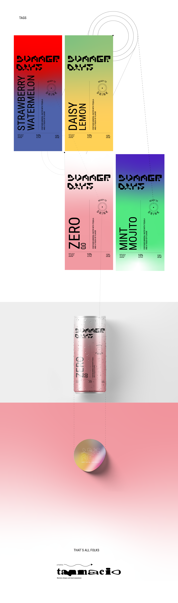

Summer Days
Este proyecto se inspira en el single "Ask" de la banda inglesa The Smiths. Lanzado el 20 de Octubre de 1986 a través de Rough Trade Records. El trabajo propone un recorrido atravez de las emociones presentes en la canción, reinterpretandolas visualmente. A partir de su universo emocional y su mensaje sobre la vulnerabilidad el deseo y la valentia de conectar, se desarrollo una identidad visual flexible que traduce esas sensasiones en un lenguaje contemporéneo aplicado al diseño que tiene como protagonista al circulo.


